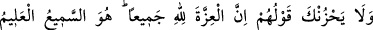
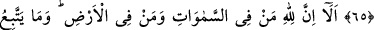
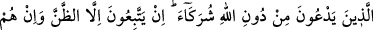
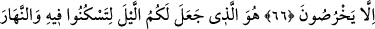
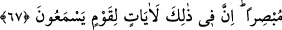

GÖKLERDE VE YERDE NE VARSA
HEPSİ ALLAH’INDIR
65. Onların sözü seni üzmesin. Şüphesiz üstünlük tamamen Allah’ındır. O, çok iyi
işiten ve çok iyi bilendir.
66. İyi bilin ki göklerde ve yerde ne varsa hepsi Allah’ındır. Allah’tan başkasına
tapanlar, gerçekte ortak koştuklarına uymuyorlar. Onlar sadece zanna uyuyorlar
ve onlar sadece saçmalıyorlar.
67. Geceyi sizin istirahat etmeniz için, gündüzü de aydınlık yapan O’dur.
Şüphesiz bunda işiten bir toplum için ibretler vardır.
“Onların sözü seni üzmesin.” Bu söz aslında Hz. Peygamber (a.s.)’ı üzülmekten
menetmektedir.
Sanki
şöyle
denilmiştir:
Onların
sözlerine
üzülme.
Seni
yalanlamalarına, seni helak etmek, işini boşa çıkarmak için plan yaparken yaptıkları
istişarelere ve seninle ilgili olarak ağızlarına aldıkları hayırsız sözlere aldırma.
Onların sözüne üzülmesinin yasaklanması, Hz. Peygamber’in üzülmesini daha etkili
bir şekilde yasaklamak içindir. Çünkü tesirin yasaklanması, onun aslı ile tesirlenmenin
de yasaklanması demektir.
el-Kevâşî’de der ki: Burada vâkıf tâm olmaktadır. Ardından yeni bir cümle
başlamaktadır. Sanki “Ben neden üzülmeyeyim?” diye sorulmuş ve cevap olarak şöyle
buyrulmuştur: “Şüphesiz üstünlük” galibiyet ve izzet “tamamen Allah’ındır.” yani
O’nun hükümranlık ve gücü dairesindedir. Ne onlar ne de başkaları, hiç kimse
bunlardan bir şeye aslâ mâlik değildir. Allah seni onlardan korur onlara karşı zafer
nasib eder. “O, çok iyi işiten ve çok iyi bilendir.” Onların senin hakkında
söylediklerini duyar, yapmaya karar verdikleri şeyleri bilir. Bunların karşılığını verecek
olan da O’dur.
et-Te’vîlâtü’n-Necmiyye’de şöyle denilir: “Şüphesiz üstünlük tamamen” yani hem
dünyada hem de âhirette “Allah’ındır.” O, dilediğini dünyada azîz kılar, âhirette kılmaz.
Dilediğini âhirette aziz kılar, dünyada kılmaz. Dilediğini de hem dünyada hem de
âhirette aziz kılar. Böyle aziz kılınan birine dünyanın şehvet ve nimetlerinden zevk alma
ve dünya süsleriyle süslenmek konusunda şeytanın vesveseleriyle nefsin kuruntuları